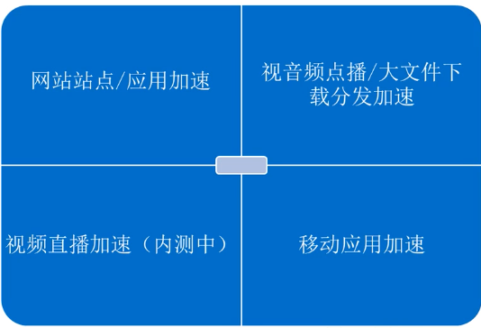

简介
CDN的全称是Content Delivery Network，即内容分发网络，是位于网络层与应用层之间的网络应用，其目的是通过
在现有的Internet中增加一层新的网络架构，通过智能的中心管理系统，使用广泛分布的服务器群来改善Internet上
的服务质量，提高网站服务的承载能力及网站运行的安全性，改善用户访问的响应质量。从技术上全面解决由于网络带
宽小、用户访问量大、网点分布不均等问题，提高用户访问网站的响应速度。
使用场景

功能
1.节点缓存
智能对象热度算法,分层缓存HOT资源,让您的资源精准加速一系列页面优化、智能压缩功能,为您减少传输内容节约开销
的同时提升加速效果
2.精准调度
不论您的站点属于门户资讯类网站、多媒体视音频类网站、游戏类网站或是移动应用类APP等等,CDN会智能分配调度域
提供针对需求的业务支持,全面为您的站点提速
3.多场景的业务支持,多组件配合服务
视频流媒体直播服务,视音频渐进式点播服务,低缓冲时间,高流畅度播放体验,支持mp4、flv视频格式支持资源链接鉴权
,可自定义鉴权KEY,保障您的媒体资源安全,免去盗链担忧天然无缝配合对象存储OSS使用,提高网站访问速度,有效女降
低OSS的外网流量费用,结合云服务器ECS使用,提高网站可用性,保护服务器源站信息,降低带宽使用成本也可使用负载均
衡做为源站地址回源,降低回源带宽压力,同时也支持非阿里云源站,对接无门槛,经过资源审核即可快速部署加速服务
4.自助式管理
自助式控制台,自定义配置分钟级全节点智能部署简单操作即可快速开通CDN服务。您可以通过控制台自助化配置域名的
添、删、改、查,设置加速节点缓存策略、防盗链、http头信息等,也可根据求选择性开启多种加速优化功能开放原子性
可扩展的API,配合管理控制台,享受灵活便捷CDN服务通过CDN API实现对加速域名、分发资源和监控数据进行灵灵活部
署、快速操作、精确使用、及时监控。也可配合其他阿里云云产品API,实现多平台自定义portal
5.实时监控
全景信息监控,多维度护航资源分发全面的网络监控,丰富的数据分析,方便的资源报表下载,提供包含带宽流量、访问质
量、访客数据、热门分析、安全防护等全景监控信息
cdn限制
1.帐号需在阿里云官网完成帐号实名认证
2.加速的域名必须在工信部完成备案,并接入阿里云
3.加速域名的源站内容,需保存于ECS或OSS;如源站内容不在阿里云,接入需经过审核
4.所有接入CDN的域名都要经过审核,发现以下任意一种情况,CDN目前不支持接入
>加速域名无法正常访问或内容不含有任何实质信息
>加速域名为游戏私服类
>加速域名为传奇类游戏、纸牌类游戏
>加速域名为P2P类网站
>加速域名为彩票类网站
>加速域名为违规医院和药品类网站
>加速域名为涉黄、涉毒、涉赌等
>自动超时拒绝:您的域名因不符合CDN接入规则而拒绝,请您查看之前的反馈结果合规后可再行申请提交审核
5.对于已接入阿里云CDN的域名,会进行定期复审,如发现以上任何一种违
规行为,将立即中止该域名的CDN加速,同时中止该用户下所有域名的
CDN服务
6.加速域名处于"停用"状态(包含"审核未通过"状态)超过30天,系统会自动删除该域名相关记录:如果需要继续对该域
名进行CDN加速,请重新添加域名